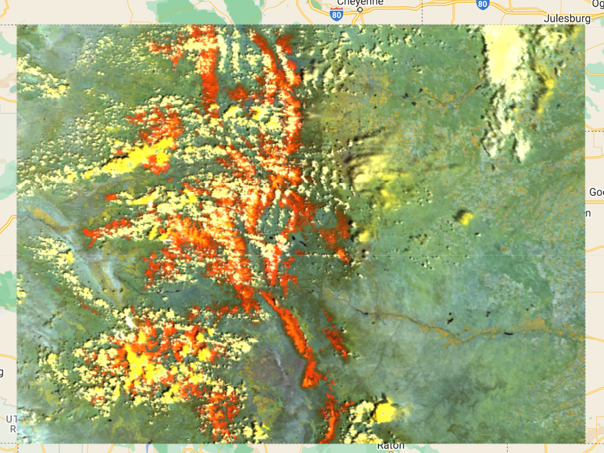

Remote Sensing Image Segmentation
This is the second section of the webpage.
Skills: python, pytorch, CNN, geopandas, deep-learning

Earthquakes and Injection with PostGIS
Webapp that uses an API to query a PostGIS database and display various interactive visualizations
Skills: Angular, AJAX, Flask, SQL, PostGIS, RESTful APIs
Cloud Classification in MODIS images
This is a small remote sensing classification project using MODIS Level-2 imagry. The objective was to map the number of cloudy days in Colorado
Skills: python, scikit-learn, Google Earth Engine, QGIS, ArcGIS Pro